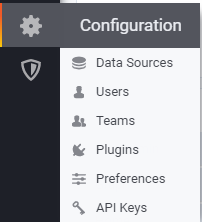
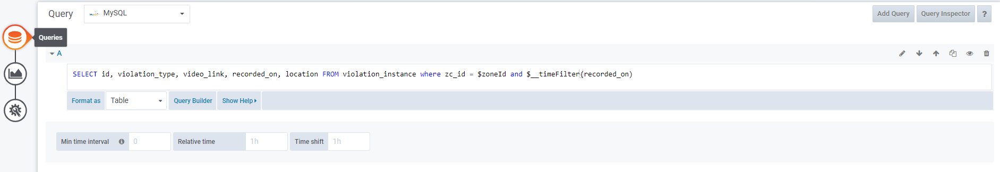

In this post, we will see how to use MySQL in your custom panel in Grafana.
If you don’t know how to make custom panels read this post before this. https://nayan.co/blog/2020/01/06/create-custom-grafana-panel/
MySQL in Grafana
To use your MySQL in your dashboard, you need to link your MySQL db with your dashboard. To do so, follow the steps below:
- Find the Configurations icon of your Grafana on the left side of your dashbaord.
- Click Add Datasource
 - Click on Add New Source
- Choose MySQL and add your databse credentials.
Using Data in your panel.
To show data from your SQL db to your panel. You need to use it in your panel’s module.ts and frontend page.
This example has data integration, if you want to see a code for referral.
https://github.com/grafana/piechart-panel
To get the data in your panel you need to call your function when queries fetch the data from DB. There are 5 events in a grafana panel which are listed below:
1 | this.events.on('render', this.onRender.bind(this)); |
The only one we need to think about right now is data-received event. This event is called whenever an SQL query is entered in the Query Editor of a panel in Grafana.

onDataReceived
1 | onDataReceived(dataList: any) { |
This function is called whenever data is received on panel. Since we bind this in this function. Its own object is sent in this function. dataList contains all the data in this case. You can manipulate and show the data however you want in this function.
You can enter any number of queries in the Queries Section of your panel in the dashboard and use them as they are sent in dashboard as an Array output.
This is how you use SQL DB in your custom Grafana Panel
Tips: You can use $__timeFilter(column_name) to filter the data according to the timestamp provided in Grafana dashboard. This is an inbuilt function in grafana MySQL.
References: